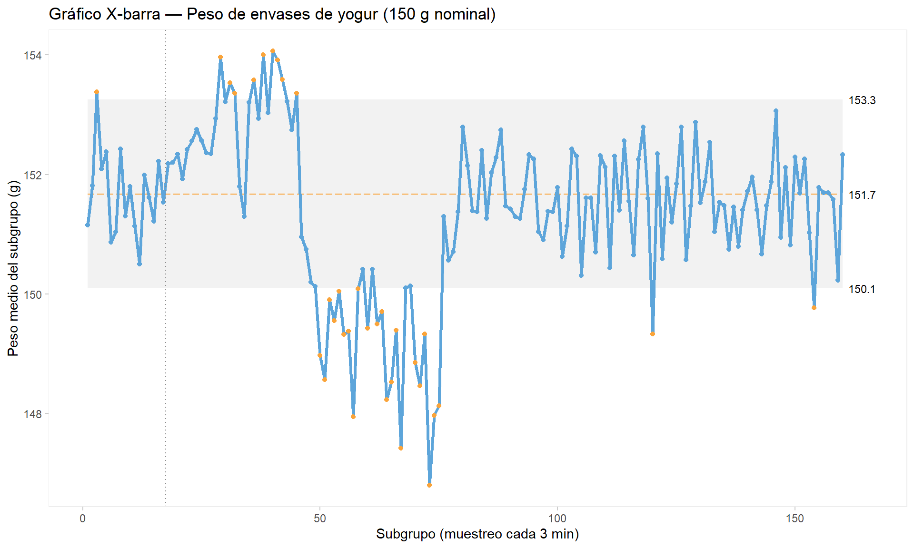
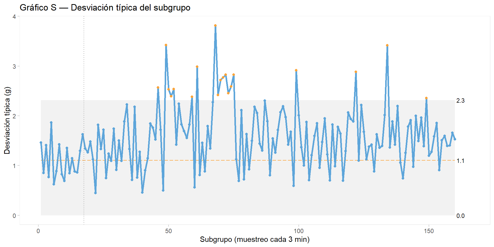

Al finalizar este capítulo, el alumno será capaz de:
Distinguir entre variabilidad por causas comunes y variabilidad por causas especiales, e identificar ejemplos de cada tipo en un proceso industrial.
Diferenciar la variabilidad a corto plazo de la variabilidad a largo plazo y reconocer sus causas típicas.
Explicar qué significa que un proceso está “bajo control estadístico” y qué consecuencias tiene para la toma de decisiones.
Interpretar un gráfico de control X-barra/S: límites de control, línea central, señales de alarma.
Aplicar las reglas básicas de detección de causas especiales en un gráfico de control.
Entender el concepto de capacidad de proceso y los índices \(C_p\) y \(C_{pk}\).
Usar qicharts2 en R para construir gráficos de control a partir de datos reales de proceso.
Conceptos clave: control estadístico de procesos, causas comunes, causas especiales, variabilidad a corto y largo plazo, gráfico de control, límites de control, X-barra, rango, reglas de Western Electric, capacidad de proceso, \(C_p\), \(C_{pk}\).
TipSobre el código de este capítulo
Los gráficos de control de este capítulo se generan exclusivamente con R, usando la librería qicharts2. Es uno de los casos en que R dispone de herramientas específicas mucho más adecuadas que Python para esta tarea.
9.1 El origen del control estadístico de procesos
A finales de los años 1920, el ingeniero Walter Shewhart, trabajando en los laboratorios Bell de AT&T, se enfrentaba a un problema práctico: los teléfonos que fabricaban tenían una variabilidad de calidad que nadie sabía cómo interpretar. ¿Cuándo era necesario intervenir en el proceso y cuándo era mejor dejarlo en marcha? Intervenir innecesariamente introducía más variabilidad, no menos.
Shewhart formuló una distinción que cambió la forma de entender la calidad industrial: no toda la variabilidad es igual. Hay una variabilidad que es inherente al proceso — inevitable, predecible, consecuencia de la suma de muchas causas pequeñas — y hay otra variabilidad que es señal de que algo ha cambiado y que requiere investigación.
Esta distinción, y la herramienta que Shewhart desarrolló para detectarla — el gráfico de control —, siguen siendo hoy el fundamento del control estadístico de procesos (SPC, del inglés Statistical Process Control).
9.2 Causas comunes y causas especiales
La variabilidad por causas comunes
Las causas comunes son todas aquellas fuentes de variación que están siempre presentes en el proceso, que afectan a todos los resultados de forma continua y que son inherentes al sistema tal como está diseñado. Su efecto individual es pequeño, pero su suma produce la variabilidad de fondo del proceso.
En un proceso de llenado de yogures, las causas comunes incluyen: pequeñas fluctuaciones de presión en la línea de llenado, variaciones mínimas en la viscosidad del producto, pequeñas diferencias en la temperatura del producto, vibraciones del equipo. Ninguna de estas causas produce por sí sola una desviación importante, pero juntas explican por qué dos envases consecutivos no pesan exactamente lo mismo.
En un laboratorio de análisis de leche, las causas comunes incluyen: la variabilidad natural de la técnica analítica, pequeñas diferencias entre repeticiones del mismo analista, fluctuaciones del instrumento dentro de su rango normal de operación.
La variabilidad por causas comunes produce una distribución aproximadamente normal y predecible. Un proceso que solo tiene causas comunes se dice que está bajo control estadístico: sus resultados son aleatorios dentro de un rango definido y calculable.
NotaCausas comunes y el sistema
Las causas comunes son responsabilidad del sistema, no del operario. Eliminarlas requiere cambiar el diseño del proceso, los equipos, los materiales o el método. Un operario que trabaja correctamente dentro de un sistema con mucha variabilidad no puede reducir esa variabilidad por sí solo.
Esto tiene implicaciones importantes para la gestión: culpar al operario de la variabilidad causada por el sistema es un error que Deming identificó como uno de los principales obstáculos para la mejora de la calidad. La ausencia de procedimientos escritos, la falta de formación o la inexistencia de instrucciones de trabajo en el puesto son causas comunes del sistema — no del operario — y solo la dirección puede corregirlas. Este es uno de los principios fundamentales de Lean Manufacturing: estandarizar antes de mejorar.
La variabilidad por causas especiales
Las causas especiales son eventos discretos, identificables y no siempre presentes que producen una variación adicional sobre la variabilidad de fondo. Su aparición es una señal de que algo ha cambiado en el proceso.
En el proceso de llenado de yogures, las causas especiales incluyen: un cambio brusco de presión en la línea, el desgaste progresivo de una válvula dosificadora, un ajuste incorrecto del operario, un cambio de lote de materia prima con propiedades diferentes.
En el laboratorio, las causas especiales incluyen: un analista que ha desarrollado un hábito incorrecto de lectura, un instrumento que necesita calibración, una muestra contaminada o mal conservada. Como veremos en el capítulo dedicado al análisis del sistema de medición, el sesgo sistemático de un analista es un ejemplo clásico de causa especial identificable y corregible.
La variabilidad por causas especiales produce patrones no aleatorios en los datos: tendencias, saltos bruscos, ciclos, puntos fuera de los límites esperados. Estos patrones son detectables y su detección es el objetivo del gráfico de control.
NotaCausas especiales y el operario
Las causas especiales son responsabilidad del operario o del equipo de proceso. Cuando aparece una causa especial, la acción correcta es investigarla, identificarla y eliminarla. No requiere rediseñar el sistema — requiere encontrar qué cambió y corregirlo.
La distinción entre causas comunes (sistema) y causas especiales (proceso) es fundamental para actuar correctamente: intervenir en el sistema cuando hay una causa especial, o tratar de corregir el proceso cuando el problema es del sistema, son errores que empeoran la situación.
Ejemplos en la industria quesera y alimentaria
Situación
Tipo de causa
Acción correcta
El extracto seco varía ±0,5% de forma aleatoria entre fabricaciones
Común
Revisar el proceso de estandarización y los equipos
El extracto seco sube de forma sostenida durante tres semanas de verano
Especial
Investigar cambio estacional, ajuste del operario
El pH varía ±0,05 unidades de forma aleatoria
Común
Revisar la precisión del método analítico
Un análisis de pH da 4,35 cuando el rango habitual es 4,5-4,9
Especial
Verificar la muestra, repetir el análisis
Los recuentos de coliformes fluctúan con mediana 10 ufc/g
Común
Revisar las condiciones generales de higiene
Los coliformes alcanzan 20.200 ufc/g en agosto
Especial
Investigar la fabricación concreta y las condiciones de ese día
El peso de envases varía ±2 g de forma aleatoria
Común
Revisar la precisión de la dosificadora
El peso medio cae 5 g en una hora
Especial
Verificar presión, temperatura y ajustes del operario
La conexión con la distribución normal
Cuando un proceso opera solo con causas comunes, sus resultados se distribuyen de forma aproximadamente normal alrededor de la media del proceso. Cuando aparece una causa especial, la distribución ya no es normal ni predecible: puede aparecer un sesgo, una cola asimétrica, o incluso una distribución bimodal. Estos patrones son exactamente lo que los gráficos de control están diseñados para detectar.
9.3 Variabilidad a corto plazo y variabilidad a largo plazo
Además de la distinción entre causas comunes y especiales, es útil distinguir entre la variabilidad que se manifiesta en períodos cortos de tiempo y la que solo se hace visible a lo largo de semanas, meses o años.
Variabilidad a corto plazo
Es la variabilidad que se observa dentro de un turno o entre turnos consecutivos. Es la que captura el gráfico de control diario. Sus causas son generalmente visibles y trazables: un ajuste incorrecto, un cambio de turno, una variación de temperatura ambiental durante el día.
Variabilidad a largo plazo
Es la variabilidad que solo se hace visible cuando se analizan datos de semanas o meses. Sus causas son más difíciles de identificar precisamente porque su efecto es gradual e imperceptible en el día a día:
En la industria quesera: - Deriva gradual de la composición de la leche a lo largo de la lactación (más grasa en otoño-invierno, más proteína en primavera) - Cambio imperceptible en el tiempo de acidificación por acostumbramiento o mutación del cultivo iniciador - Desgaste progresivo de equipos de corte de cuajada que produce granos cada vez más grandes - Deriva en los procedimientos de estandarización que el operario ha ido ajustando informalmente sin documentar - Colmatación progresiva del electrodo de los pHmetros por mantenimiento y limpieza insuficientes: las medidas de pH van perdiendo fiabilidad de forma tan gradual que el error pasa desapercibido durante semanas o meses, hasta que la desviación es ya demasiado grande para ignorarla. Es una de las causas de variabilidad analítica más frecuentes en quesería y una de las menos vigiladas
En la industria alimentaria en general: - Cambio gradual en las características de un proveedor de envases que afecta al sellado - Deriva estacional en la humedad ambiental que afecta al secado de productos - Acumulación de depósitos en intercambiadores de calor que reduce progresivamente la eficiencia
En la industria en general: - Desgaste de herramientas de corte en mecanizado que produce dimensiones progresivamente fuera de tolerancia - Degradación de catalizadores en procesos químicos - Deriva de calibración de instrumentos de medida
NotaLa variabilidad a largo plazo y los procedimientos
Una de las causas más frecuentes e insidiosas de la variabilidad a largo plazo es la deriva en los procedimientos: los operarios van introduciendo pequeños ajustes informales que no quedan documentados y que con el tiempo se convierten en la forma habitual de trabajar, desviándose del procedimiento original sin que nadie lo haya decidido explícitamente.
Lean Manufacturing pone especial énfasis en la estandarización y auditoría de procedimientos precisamente para combatir esta deriva. Un procedimiento que no se audita regularmente tiende a evolucionar espontáneamente, no siempre en la dirección correcta. Los gráficos de control a largo plazo son una herramienta de auditoría del proceso: si la media del proceso o su dispersión cambian gradualmente a lo largo de meses, es señal de que algo en el sistema ha derivado.
9.4 El gráfico de control: la herramienta de Shewhart
Un gráfico de control es una representación temporal de los resultados del proceso con tres líneas horizontales:
La línea central (CL): la media del proceso en condiciones de referencia
El límite de control superior (UCL): la media más 3 desviaciones típicas
El límite de control inferior (LCL): la media menos 3 desviaciones típicas
Shewhart eligió ±3σ como límites por razones prácticas: con una distribución normal, el 99,7% de los valores caen dentro de ese rango. Un punto fuera de los límites es tan improbable por azar (probabilidad < 0,3%) que su aparición es casi siempre señal de una causa especial.
NotaLímites de control vs. especificaciones
Los límites de control no son las especificaciones del producto ni los límites legales. Son límites estadísticos calculados a partir del comportamiento real del proceso. Un proceso puede estar bajo control estadístico y aun así producir producto fuera de especificación, si su variabilidad natural es demasiado grande. Esta es la conexión con el concepto de capacidad de proceso, que veremos más adelante en este capítulo y en detalle en el capítulo dedicado al RD 1801/2008.
El gráfico X-barra/S y el muestreo
En la práctica industrial, los datos no se toman de forma continua sino mediante muestreo: a intervalos regulares de tiempo se toma un pequeño grupo de unidades consecutivas, se miden y se registran. Para cada subgrupo se calculan:
La media del subgrupo (\(\bar{X}\)): representa el nivel del proceso en ese momento
La desviación típica del subgrupo (\(S\)): mide la dispersión de los valores dentro del subgrupo y es más robusta que el rango cuando el tamaño del subgrupo es pequeño
El intervalo de muestreo es una decisión de diseño importante. Un intervalo corto (cada 5 minutos) permite detectar problemas rápidamente pero genera mucho trabajo de toma de datos. Un intervalo largo (cada hora) es más manejable pero puede perder señales importantes. En la práctica industrial se busca un equilibrio entre la frecuencia necesaria para tomar decisiones a tiempo y el coste del muestreo.
En nuestro caso práctico, simularemos un muestreo de 5 envases cada 3 minutos, lo que da 160 subgrupos a lo largo del turno de 8 horas — suficiente para ver las derivas con claridad sin emborronar el gráfico.
NotaMuestreo automático vs. muestreo manual
Un muestreo cada 3 minutos solo es realista con un sistema de control de peso automático en línea, integrado en la propia línea de llenado. Estos sistemas pesan cada envase o toman muestras automáticas a intervalos programados y registran los datos sin intervención del operario.
En un sistema de muestreo manual, donde el operario tiene que detener la línea, pesar los envases, anotar los resultados y calcular la media del subgrupo, un intervalo inferior a 5-10 minutos no es realista: no hay tiempo material para hacerlo correctamente. Un operario presionado por un intervalo demasiado corto acabará tomando atajos — pesando menos envases, anotando de memoria, saltando muestras — lo que invalida el gráfico de control.
El diseño del sistema de muestreo debe ser compatible con la carga de trabajo real del operario. Un gráfico de control basado en datos mal tomados es peor que no tener gráfico: da una falsa sensación de control.
Las reglas de detección
Además de los puntos fuera de los límites de control, hay patrones en la secuencia de puntos que también indican la presencia de causas especiales. Las reglas de Western Electric son el conjunto más utilizado:
Regla 1: un punto fuera de los límites ±3σ
Regla 2: dos de tres puntos consecutivos más allá de ±2σ en el mismo lado
Regla 3: cuatro de cinco puntos consecutivos más allá de ±1σ en el mismo lado
Regla 4: ocho puntos consecutivos en el mismo lado de la línea central
Cada regla detecta un tipo diferente de señal: la regla 1 detecta cambios bruscos, las reglas 2 y 3 detectan tendencias moderadas, la regla 4 detecta desplazamientos sostenidos de la media.
9.5 Caso práctico: control del proceso de llenado de yogures
Usamos el dataset llenado_yogures_muestra.csv que contiene los resultados de un muestreo de 5 envases cada 3 minutos durante un turno de 8 horas (160 subgrupos, 800 envases en total). El turno incluye varias derivas simuladas que el gráfico de control debería detectar.
Fase I: establecer los límites de control
Usamos los primeros 17 subgrupos (proceso estable al inicio del turno, hasta las 08:51) como período de referencia para calcular los límites:
cat("Envases por subgrupo:", df |>count(muestra) |>pull(n) |>unique(), "\n")
Envases por subgrupo: 5
Código
qic(x = muestra,y = peso_g,data = df,chart ="xbar",freeze =17,title ="Gráfico X-barra — Peso de envases de yogur (150 g nominal)",ylab ="Peso medio del subgrupo (g)",xlab ="Subgrupo (muestreo cada 3 min)")

Código
qic(x = muestra,y = peso_g,data = df,chart ="s",freeze =17,title ="Gráfico S — Desviación típica del subgrupo",ylab ="Desviación típica (g)",xlab ="Subgrupo (muestreo cada 3 min)")

Interpretación de los gráficos
El gráfico X-barra muestra con claridad las tres derivas simuladas:
Deriva ascendente (subgrupos ~17-42): la media del proceso sube progresivamente desde aproximadamente 151,5 g hasta 153 g. Los puntos empiezan a aparecer sistemáticamente por encima de la línea central, activando primero las reglas 3 y 4 y luego la regla 1. En un proceso real, esta señal indicaría que la dosificadora está entregando más producto de lo previsto — posiblemente por desgaste de la válvula o por un aumento de temperatura que reduce la viscosidad del yogur.
Salto brusco a la baja (subgrupos ~42-50): la media cae bruscamente por debajo del límite de control inferior. Esta señal corresponde al ajuste incorrecto del operario: al detectar la deriva ascendente, corrigió en exceso. Los saltos bruscos de este tipo son consecuencia habitual de ajustes manuales no documentados.
Aumento de dispersión (subgrupos ~50-75): el gráfico S muestra un aumento progresivo de la desviación típica mientras que el X-barra muestra la media ligeramente baja pero sin tendencia clara. Este patrón — dispersión creciente sin cambio de media — es característico del desgaste de equipos: la dosificadora empieza a ser inconsistente, llenando algunos envases de más y otros de menos.
Restauración tras mantenimiento (subgrupos ~75 en adelante): tanto la media como el rango vuelven al rango de referencia.
Notaqcc: una alternativa más potente
La librería qicharts2 es moderna, integrada con ggplot2 y muy fácil de usar para casos estándar. Para análisis más avanzados — descomposición detallada de la varianza, índices de capacidad de proceso, gráficos CUSUM para detectar derivas lentas — la librería qcc ofrece más funcionalidades.
qcc es la librería de referencia académica para SPC en R, utilizada en el libro Quality Control with R de Emilio L. Cano, Javier M. Moguerza y Mariano Prieto Corcoba (Springer, 2015), con código disponible en qualitycontrolwithr.com.
9.6 La capacidad del proceso
Saber que un proceso está bajo control estadístico no es suficiente: también necesitamos saber si ese proceso es capaz de cumplir las especificaciones. Un proceso puede ser perfectamente estable y predecible, y aun así producir demasiado producto fuera de los límites aceptables si su variabilidad natural es demasiado grande.
La capacidad del proceso mide la relación entre la variabilidad natural del proceso y los límites de especificación. Se cuantifica mediante dos índices:
El índice \(C_p\)
\[C_p = \frac{LSE - LIE}{6\sigma}\]
donde \(LSE\) es el límite superior de especificación, \(LIE\) es el límite inferior de especificación y \(\sigma\) es la desviación típica del proceso. El denominador \(6\sigma\) representa la amplitud total de la variabilidad natural (±3σ a cada lado de la media).
Un \(C_p = 1\) significa que la variabilidad natural del proceso ocupa exactamente el espacio entre los dos límites de especificación. Un \(C_p > 1\) indica que el proceso tiene más “holgura” que la mínima necesaria. En la práctica industrial se exige habitualmente \(C_p \geq 1{,}33\) o incluso \(C_p \geq 1{,}67\) para procesos críticos.
El problema de \(C_p\) es que no tiene en cuenta si la media del proceso está centrada entre los límites. Un proceso puede tener \(C_p > 1\) y estar produciendo muchos defectos si su media está desplazada hacia uno de los límites.
\(C_{pk}\) toma el mínimo de las dos distancias — de la media al límite superior y de la media al límite inferior — y la expresa en unidades de 3σ. A diferencia de \(C_p\), sí tiene en cuenta el centrado de la media.
Si el proceso está perfectamente centrado, \(C_{pk} = C_p\). Si la media está desplazada, \(C_{pk} < C_p\). Un \(C_{pk}\) bajo con un \(C_p\) alto indica que el problema no es la variabilidad sino el centrado del proceso.
Aplicación al proceso de llenado de yogures
Para el proceso de llenado de yogures en el período estable (Fase I), con \(\mu \approx 151{,}5\) g y \(\sigma \approx 1{,}3\) g, y usando como límites de especificación los del RD 1801/2008 (T2 = 141 g como límite inferior; no hay límite superior legal):
Un \(C_{pk} = 2{,}7\) indica un proceso muy capaz respecto al límite T2. Pero si la variabilidad aumenta a \(\sigma = 3\) g (como en el período de dispersión creciente):
Un \(C_{pk} < 1\) indica que el proceso está produciendo producto por debajo de T2, lo que el RD 1801/2008 prohíbe. El análisis de capacidad conecta directamente con el análisis económico de la sobredosificación que veremos en el capítulo dedicado al RD 1801/2008.
El gráfico de capacidad
Los índices de capacidad son más fáciles de interpretar cuando se visualizan en un gráfico que muestra simultáneamente la distribución del proceso y los límites de especificación. Usamos la librería qcc para generarlo.
Como límite inferior de especificación (LSL) usamos T1 = 145,5 g, el límite por debajo del cual un envase se considera defectuoso según el RD 1801/2008. Como límite superior usamos 157,5 g, valor simétrico respecto al peso nominal de 150 g, que aunque no existe como límite legal nos permite visualizar el centrado del proceso. El análisis detallado de los límites T1 y T2, el porcentaje máximo permitido de envases defectuosos y el análisis económico de la sobredosificación se desarrollan en el capítulo dedicado al RD 1801/2008.
Gráfico 1: capacidad del turno completo (incluyendo derivas)
En la situación real, los 800 envases muestreados durante el turno han salido al mercado — no había sistema de detección en tiempo real que los eliminara. El gráfico muestra la capacidad del proceso tal como ocurrió, con todas las derivas incluidas:
Código
library(qcc)# Todos los datos del turnodatos_completo <-qcc.groups(df$peso_g, df$muestra)q_completo <-qcc(datos_completo, type ="xbar",title ="Turno completo",plot =FALSE)process.capability(q_completo,spec.limits =c(145.5, 157.5),target =150)
Gráfico 2: capacidad del proceso en Fase I (solo proceso estable)
Ahora repetimos el análisis usando únicamente los primeros 17 subgrupos, cuando el proceso estaba bajo control estadístico sin causas especiales activas. Esta es la capacidad potencial del proceso si se eliminan las derivas:
Código
# Solo Fase I: primeros 17 subgruposdf_fase1 <- df |>filter(muestra <=17)datos_fase1 <-qcc.groups(df_fase1$peso_g, df_fase1$muestra)q_fase1 <-qcc(datos_fase1, type ="xbar",title ="Fase I — proceso estable",plot =FALSE)process.capability(q_fase1,spec.limits =c(145.5, 157.5),target =150)
La comparación entre los dos gráficos muestra con claridad el efecto de las derivas sobre la capacidad del proceso. En el turno completo, la distribución es más ancha y menos centrada, lo que se traduce en índices \(C_p\) y \(C_{pk}\) más bajos y en un mayor porcentaje de envases fuera de especificación. En la Fase I, la distribución es más estrecha y mejor centrada, con índices notablemente mejores.
La diferencia entre los dos escenarios es precisamente el argumento económico de la mejora: eliminar las causas especiales que producen las derivas no solo mejora la calidad del producto sino que reduce la sobredosificación necesaria para cumplir la legislación. Este análisis se desarrolla en detalle en el capítulo dedicado al RD 1801/2008.
NotaEstablecer límites técnicos a partir de la capacidad
Un error frecuente en la industria es fijar límites técnicos de proceso (“no más de X defectos por turno”) sin haber evaluado previamente la capacidad del proceso. Si el proceso tiene una variabilidad natural que produce inevitablemente un 5% de defectos, fijar el límite en 1% es irrealista — no importa cuánto se esfuercen los operarios.
El enfoque correcto es:
Medir la capacidad real del proceso (\(C_{pk}\))
Calcular el porcentaje de defectos que esa capacidad produce inevitablemente
Fijar los límites técnicos en función de esa capacidad real
Trabajar en la reducción de la variabilidad para mejorar la capacidad y reducir progresivamente los límites
Este es el vínculo entre el control estadístico de procesos y la mejora continua: el gráfico de control detecta las causas especiales, los índices de capacidad cuantifican la variabilidad de fondo, y la mejora continua trabaja en reducir esa variabilidad estructural. Lo veremos en profundidad en el capítulo dedicado a la mejora continua y el análisis de datos.
9.7 Actuar correctamente: la regla de oro del SPC
El gráfico de control no es solo una herramienta de detección — es también una guía de actuación:
Si el proceso está bajo control: no intervenir. Los ajustes innecesarios introducen variabilidad adicional. Esta es una de las lecciones contraintuitivas del SPC: a veces la mejor acción es no hacer nada.
Si el gráfico muestra una señal: investigar la causa especial, identificarla y eliminarla. No ajustar el proceso a ciegas — primero entender qué ocurrió.
El turno de yogures ilustra el coste de no seguir esta regla: el operario que ajustó la dosificadora al detectar la deriva ascendente introdujo un salto brusco que fue peor que la propia deriva. Si hubiera esperado a confirmar la señal con las reglas de Western Electric, el ajuste habría sido más preciso.
9.8 Resumen del capítulo
El control estadístico de procesos parte de una distinción fundamental: no toda la variabilidad es igual. La variabilidad por causas comunes es inherente al sistema y solo puede reducirse cambiando el sistema. La variabilidad por causas especiales es señal de que algo ha cambiado y debe investigarse. A esta distinción se añade la diferencia entre variabilidad a corto plazo — visible en el gráfico de control diario — y variabilidad a largo plazo, causada por derivas graduales en la composición de materias primas, el desgaste de equipos o la deriva imperceptible de los procedimientos.
El gráfico de control X-barra/S detecta ambos tipos de señal. Los índices de capacidad \(C_p\) y \(C_{pk}\) cuantifican si la variabilidad natural del proceso es compatible con las especificaciones. Estos dos conceptos — control y capacidad — son los pilares del SPC y la base sobre la que se construye la mejora continua.